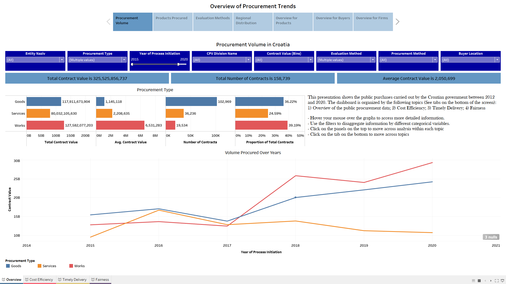
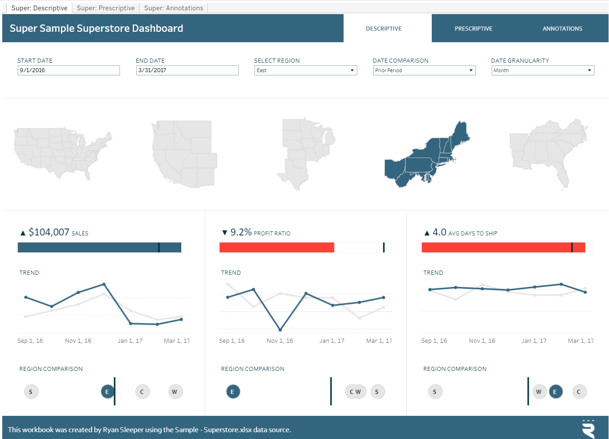
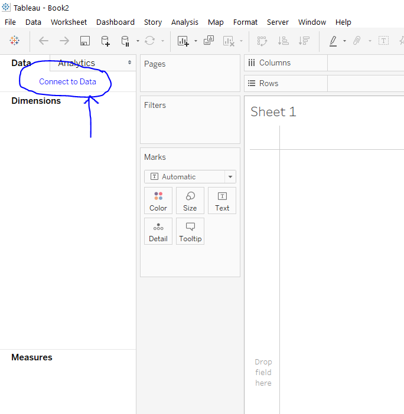

Introduction to Tableau
What is Tableau?
Tableau is a data visualization tool that can be used to explore and visualize data through a simple and user-friendly interface.
- First exploration of data
- Building dashboards
- Monitoring of key indicators
Where does this fit in our datawork plan?
- We learned how to clean, process and construct data on Stata
- We also learned how to analyse the data through preparing graphs
- Tableau can be useful if you want to use your final data to create dashboards for monitoring your key indicators
- Tableau has some basic ways for manipulating and cleaning data, however, these are not reproducible and as flexible enough as Stata
Dashboard for public procurement in Croatia

Other visualization examples from Tableau Website

How to start?
- We should start with pre-cleaned data that already has all our constructed indicators
- You can load several pre-cleaned datasets at different levels of observation to Tableau at the same time
- Identify all the indicators and variables you are most interested to visualize on Tableau
- Keep only the indicators and variables that you want to visualize (use
keep for this)
- Keep the ID variables if you want to load data from different levels of observation at the same time
- Then export the dataset in excel to import into Stata (use
export excel)
What will we learn in this session
- We will use a sample of a pre-cleaned contract level dataset for this session
- We will learn how a visualization can be created using data imported into the session (Workbook)
- We will learn how several visualizations can be combined into a dashboard page
- We will learn how filters can be applied to a dashboard page
The exercises will be conducted on Tableau and recorded with a video for later reference
We will first Connect Tableau to the Data

We will first Connect Tableau to the Data
- Tableau Desktop usually opens to a new worksheet where you can first connect it to your data exported before
- You can have many options for the data source of your tableau dashboard. It can be an excel file, csv, txt etc.
- You can also connect the dashboard to a server directly if using Microsoft SQL, MySQL, Amazon Redshift, etc
- Once you connect the data you will see it pop up in your data source tab
Let’s try this now
Visualizations on a Workbook
- The left hand side of your screen will have three main lists, Data Source, Dimensions, Measures.
- Dimensions are any dicrete or text variable in your dataset
- Measures are any numericals in your dataset
- You can rename the dimensions and measures in your dataset by right-clicking it and selecting ‘rename’
- You can use the dimensions and measures in your dataset to create visualization
Let’s create a map of Croatia with total contracting value per county
Lessons on visualizing maps
- Make sure that the geographical role for your location variable is well defined (right-click on location variable)
- The country (in sub-country locations) may be incorrect in default settings, so you can change that when you create the map
- The map can be customized to include aggregated numerical data in many multiple settings. You can explore the marks widget for different visualization settings
Let’s create a line graph for contracting volume over years and a bar graph for contracting volume over evaluation method
Lessons on visualizations
- You can filter out the null values from a chart as needed in the chart
- You can customize the appearance of the chart by changing the color, text and font on the chart
- You can use the ‘Show Me’ tab to explore the different viable options for visualization as needed
- You can add filters to your workbooks so you can change the scope of your chart as you wish
Let’s add filters to all our workbooks for CPV Division name, Firm County, Postupak Nadmetanje Name
Lessons on filters
- You can drag the dimensions you want to add filters for to the ‘Filters’ widget on an existing workbook
- You can decide whether you want to apply all categories of the filter to the chart or only a selection
- You can right-click on the filter to apply the filter to all woksheets or a selection of worksheets (this will have implications on your final dashboard)
- You can select whether you want to show the filter beside the chart
- You can customize the appearance of the filter as you would like to see it in the dashboard
Let’s combine our worksheets to a dashboard
Lessons on Dashboard
- You can simply drag the graphs from the worksheets to an empty dashboard sheet
- You can move around the graphs as you please for your appearance customization
- Using Layout options for horizontal or vertical boxes can help setting your visualization structure
- You can select ‘Distribute Contents Evenly’ under the drop-down options for the boxes to ensure even space use
- Check if your filters apply to all the charts you intend it to work on and re-adjust if not
Keep playing around with Tableau Desktop options to customize and structure your visualizations!